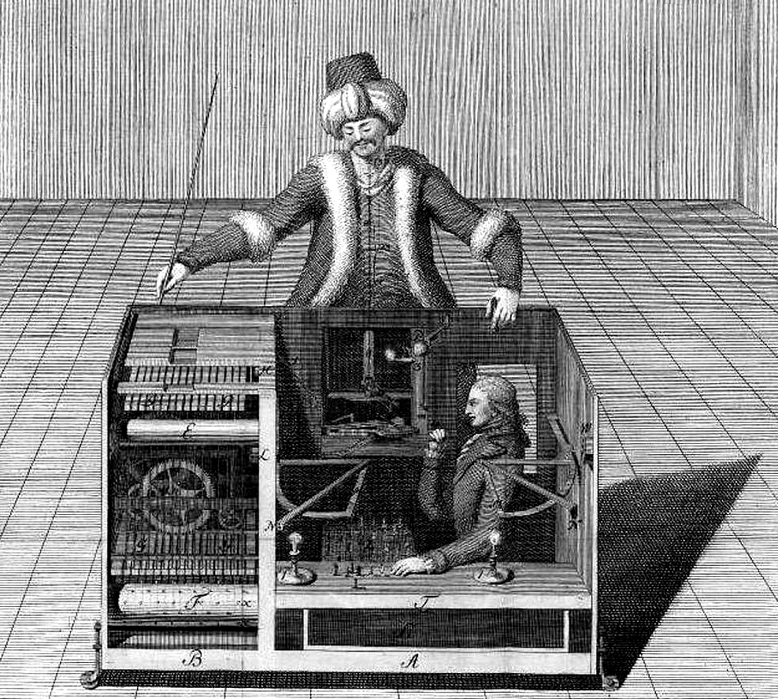

Executive Summary
아마존이 2026년 7월 30일부터 메커니컬 터크(MTurk)의 신규 고객 등록을 받지 않는다. 같은 날 SageMaker Ground Truth와 Amazon Augmented AI도 신규 서비스를 닫는다. 2005년 "인공 인공지능(Artificial Artificial Intelligence)"이라는 슬로건으로 출발한 크라우드소싱 라벨링의 원조가, 20년 만에 사실상 유지보수 모드로 물러난다. 그리고 이 퇴장은 서비스 하나의 폐업을 넘어, AI 학습 데이터의 출처를 정면으로 건드리는 사건이다.
핵심은 종료 자체가 아니라 그 배경에 있다. 2023년 한 연구는 메커니컬 터크 워커의 33~46%가 글쓰기 과제를 LLM으로 처리한 것으로 추정했다. 사람에게 판단을 맡겨 인간의 신호를 모은다고 믿었지만, 실은 기계의 추측을 다시 모으고 있었다는 뜻이다. 인간이 AI인 척하던 자리를, 이번엔 진짜 AI가 조용히 대신했다.
그래서 이 사건이 던지는 질문은 데이터 품질이 아니라 데이터 출처(provenance)에 있다. 라벨이 정확한지를 따지기 전에, 그 라벨을 누가 또는 무엇이 만들었는지를 증명할 수 없게 되면, 정확도나 일치율 같은 품질 지표 자체가 의미를 잃는다. 출처가 품질보다 먼저 무너진다. 메커니컬 터크의 퇴장은 그 순서를 눈앞에서 보여 준다.
33~46%
워커의 LLM 사용 추정
초록 요약 과제 · Veselovsky 외 (2023)
20년
메커니컬 터크 존속 기간
2005년 '인공 인공지능'으로 출시
7/30
신규 고객 등록 중단일
Ground Truth · A2I도 동시 종료
2022.11
출처 오염의 분기점
ChatGPT 공개 후 수집분에 물음표
20년 만의 퇴장
아마존은 2026년 7월 30일부터 메커니컬 터크의 신규 고객(requester)을 받지 않겠다고 밝혔다. 기존 고객은 계속 쓸 수 있지만 신규 기능을 추가할 계획은 없다. 사실상 유지보수 모드다. 같은 날, 데이터 주석 서비스인 SageMaker Ground Truth와 사람이 개입하는 검수 파이프라인 Amazon Augmented AI(A2I)도 신규 고객 대상 운영을 종료한다. 메커니컬 터크 한 곳의 문제가 아니라, 아마존이 '인간 라벨링'이라는 사업 라인 전체를 정리하는 장면이다.
메커니컬 터크는 2005년에 나왔다. 슬로건이 "Artificial Artificial Intelligence", 우리말로 옮기면 "인공 인공지능"이었다. 이 표현은 제프 베조스가 직접 쓴 것으로, 서비스의 성격을 한마디로 압축했다. 기계가 하기 어려운 잘게 쪼갠 일을 소액 보상으로 사람에게 위탁하는 구조였고, 하나의 작업 단위를 HIT(Human Intelligence Task)라 불렀다. 겉으로는 자동화 서비스처럼 보이지만 그 뒤에서 실제로 답을 다는 것은 사람이었다는, 이름에 담긴 반전이 그대로 사업 모델이었다.

결정적 전환은 2018년이었다. 메커니컬 터크가 SageMaker의 데이터 주석 파이프라인 일부로 재포장되면서, 주력 용도가 CAPTCHA와 설문 응답에서 'AI 학습용 라벨링'으로 옮겨갔다. 초기 커뮤니티는 이미 봇과 저품질 응답으로 몸살을 앓고 있었다. 한 사용자는 아마존의 결정을 두고 "오래전에 유효기간이 지난 옛 친구를 이제야 편히 보내주는 느낌"이라고 표현했다. 실질적 쇠퇴는 발표보다 몇 년 앞서 시작됐다는 정황이다.
33~46%가 드러낸 것
플랫폼이 왜 그 자리를 지키지 못했는지는 2023년 한 편의 논문이 짚었다. 베셀로프스키(Veselovsky) 등이 발표한 "Artificial Artificial Artificial Intelligence"(arXiv:2306.07899)다. 제목의 '인공'이 하나 더 붙었다는 사실 자체가 이번 사건의 은유다. 인간이 AI인 척하던 구조 위에, 이제 그 인간이 진짜 AI를 몰래 대리로 세운다.
연구진은 실제 메커니컬 터크의 초록 요약(abstract summarization) 과제에서 워커가 LLM을 썼는지를 두 방법으로 추정했다. 하나는 타이핑 패턴을 보는 키스트로크 탐지, 다른 하나는 LLM이 생성한 텍스트를 가려내는 분류기다. 두 신호를 결합한 결과, 워커의 33~46%가 과제 수행에 LLM을 사용한 것으로 추정됐다.
이 숫자가 무서운 이유는 단순한 부정행위 비율이어서가 아니다. 순환 구조를 만들기 때문이다. 연구자는 사람에게 과제를 맡겨 인간의 판단을 수집한다고 믿는다. 그런데 그 사람의 상당수가 답을 LLM으로 만들어 되돌려주면, 데이터셋에는 기계의 추측이 '인간 라벨'이라는 이름표를 달고 쌓인다. 그렇게 모인 데이터가 다음 모델을 학습시키고, 그 모델이 또 다른 과제의 답이 된다. 인간 신호를 모으려던 파이프라인이 조용히 기계 출력을 재순환시키는 장치로 바뀐다.
저자들도 한계를 분명히 적었다. 이 추정치가 LLM을 쓰기 어려운 다른 과제로도 일반화되는지는 확실하지 않다. 그러나 결론의 방향은 분명했다. 플랫폼도, 연구자도, 워커도, 인간 데이터를 계속 인간의 것으로 지켜낼 새로운 방법을 찾아야 한다는 경고다.
품질보다 출처가 먼저 무너진다
데이터 품질을 이야기할 때 우리는 보통 두 가지를 나눠 본다. 하나는 품질(quality), 이 라벨이 정확한가를 묻는다. 다른 하나는 출처(provenance), 이 라벨을 누가 또는 무엇이 어떤 과정을 거쳐 만들었는가를 묻는다. 대부분의 데이터 관리는 앞쪽에 집중한다. 정확도, 일치율, 검수 통과율 같은 지표가 모두 품질의 언어다.
메커니컬 터크 사건이 흔든 것은 뒤쪽, 출처다. 워커가 LLM으로 만든 답이 '인간 라벨'로 기록되는 순간, 그 데이터의 정확도가 아무리 높아도 소용이 없다. 우리가 인간의 판단이라고 믿고 산 것이 실은 기계의 추측이었다면, 그 위에서 계산한 일치율이나 검수 통과율은 무엇을 측정한 값인지 알 수 없게 된다. 출처가 흔들리면 품질 지표는 근거를 잃는다. 이것이 출처가 품질보다 더 근본적이고, 더 먼저 무너진다는 말의 뜻이다.
시점도 문제를 키운다. ChatGPT가 공개된 2022년 11월 이후 메커니컬 터크에서 수집된 데이터는, 학술 NLP 벤치마크든 RLHF 선호 데이터셋이든, "이게 정말 인간의 신호인가"라는 검증되지 않은 물음을 안고 있다. 워커가 언제 어느 과제에서 LLM을 썼는지 소급해 판별할 방법이 마땅치 않기 때문이다.
품질은 나중에 고칠 수 있다. 틀린 라벨은 다시 검수하면 된다. 그러나 출처는 다르다. 이 답이 사람에게서 나왔는지 기계에서 나왔는지를 애초에 기록해 두지 않았다면, 아무리 정교한 검수로도 사후에 복원할 수 없다. AI-Ready Data에서 출처가 품질보다 먼저 서야 하는 이유가 여기에 있다.
되돌릴 수 없는 것과 새로 생기는 것
이미 수집된 데이터의 오염은 사실상 되돌리기 어렵다. 어떤 응답이 인간의 것이고 어떤 응답이 LLM의 것인지 소급 판별하는 일은, 원본에 출처 기록이 남아 있지 않는 한 신뢰할 만한 정확도로 하기 힘들다. 2022년 11월 이후 메커니컬 터크에 의존한 데이터셋 상당수는 이 물음표를 안고 살아가야 한다. 그 위에서 학습한 모델의 성능이 나쁘다는 뜻이 아니라, 그 성능의 근거를 우리가 더는 온전히 설명할 수 없다는 뜻이다.
반대로 새로 생기는 것도 있다. 검증된 인간 피드백의 몸값이다. AI 연구소들은 이미 익명 크라우드소싱 대신 Scale AI, Surge AI 같은 전문 라벨링 벤더로 옮겨가고 있다. 이들의 차별점은 값이 싸다는 것이 아니라, 신원과 전문성과 이력이 검증된 사람을 고용해 까다로운 엣지 케이스와 품질 판단을 맡긴다는 것이다. 검증된 인간이라는 조건 자체가 상품이 됐다.
그래서 메커니컬 터크의 퇴장은 "인간 라벨링이 끝났다"로 읽으면 절반만 맞다. 더 정확히는 익명이고 값싸고 검증되지 않은 인간 라벨링의 시대가 끝났다는 재정의다. 인간의 판단은 여전히 필요하다. 다만 이제는 그 판단이 진짜 인간에게서 나왔음을 증명할 수 있느냐가 함께 요구된다.
AI-Ready Data가 물어야 할 질문도 그만큼 앞당겨진다. "이 데이터는 정확한가"보다 먼저 "이 데이터는 누가 또는 무엇이 만들었다고 증명할 수 있는가"를 묻는 것. 출처를 기록하고, 생성 주체를 추적하고, 검증 이력을 데이터에 붙여 두는 일이 다음 표준이 된다. 정확도 경쟁의 밑바닥에서, 출처 증명이 먼저 자리를 잡아야 한다.
편집자의 노트. 데이터의 출처가 검증되지 않으면 그 위에 세운 품질 지표도 흔들린다는 문제의식은 페블러스가 AI-Ready Data를 다뤄 온 일관된 관점이다. 학습 데이터의 라벨에서 했던 이야기가 크라우드소싱 플랫폼의 종료라는 사건으로 다시 드러난 장면이라, 한 편의 글로 기록해 둔다. 데이터의 출처와 라벨 품질을 진단하는 관점에 관심이 있다면 DataClinic을 참고하길 권한다.
자주 묻는 질문
아마존 메커니컬 터크는 정확히 언제, 어떻게 종료되나요?
2026년 7월 30일부터 신규 고객(requester) 등록을 받지 않습니다. 기존 고객은 계속 사용할 수 있지만 신규 기능 추가 계획은 없어 사실상 유지보수 모드로 전환됩니다. 같은 날 SageMaker Ground Truth와 Amazon Augmented AI(A2I)도 신규 서비스를 종료해, 아마존이 인간 라벨링 사업 라인 전체를 정리하는 흐름으로 읽힙니다.
"인공 인공지능(Artificial Artificial Intelligence)"이 무슨 뜻인가요?
2005년 메커니컬 터크의 출시 슬로건입니다. 겉으로는 자동화 서비스처럼 보이지만, 그 뒤에서 실제로 일을 처리하는 것은 사람이라는 반전을 담은 표현입니다. 기계가 하기 어려운 작업을 잘게 쪼개 소액 보상으로 사람에게 위탁하는 구조였고, 하나의 작업 단위를 HIT(Human Intelligence Task)라 불렀습니다.
워커의 33~46%가 LLM을 썼다는 수치는 어디서 나온 것인가요?
2023년 베셀로프스키(Veselovsky) 등이 발표한 논문 "Artificial Artificial Artificial Intelligence"(arXiv:2306.07899)의 추정치입니다. 실제 메커니컬 터크의 초록 요약 과제에서, 타이핑 패턴을 보는 키스트로크 탐지와 LLM 생성 텍스트를 가려내는 분류기를 결합해 워커의 33~46%가 LLM을 사용한 것으로 추정했습니다.
'순환 오염'이란 무엇인가요?
사람에게 과제를 맡겨 인간의 판단을 모은다고 믿지만, 그 답이 실은 LLM으로 만들어진 것이라면, 기계의 추측이 '인간 라벨'이라는 이름으로 데이터셋에 쌓입니다. 그 데이터가 다음 모델을 학습시키고 그 모델이 또 다른 답이 되는 식으로 오염이 순환합니다. 인간 신호를 모으려던 파이프라인이 기계 출력을 재순환시키는 장치로 바뀌는 현상입니다.
데이터 '품질'과 '출처'는 어떻게 다른가요?
품질(quality)은 "이 라벨이 정확한가"를, 출처(provenance)는 "이 라벨을 누가 또는 무엇이 어떤 과정으로 만들었는가"를 묻습니다. 정확도·일치율은 품질의 언어입니다. 출처가 무너지면, 즉 인간 판단인 줄 알았던 데이터가 기계 출력이었다면, 그 위에서 계산한 품질 지표 자체가 무엇을 측정한 것인지 알 수 없게 됩니다.
2022년 11월 이후 데이터는 왜 문제가 되나요?
ChatGPT가 공개된 시점입니다. 이후 메커니컬 터크에서 수집된 데이터는 학술 NLP 벤치마크든 RLHF 선호 데이터셋이든 "이게 정말 인간의 신호인가"라는 검증되지 않은 물음을 안고 있습니다. 워커가 언제 어느 과제에서 LLM을 썼는지 소급 판별할 방법이 마땅치 않아, 오염을 사후에 정확히 걷어내기가 어렵습니다.
그럼 인간 라벨링은 이제 필요 없어지는 건가요?
아닙니다. 끝난 것은 익명이고 값싸고 검증되지 않은 인간 라벨링입니다. 인간의 판단은 여전히 필요하며, AI 연구소들은 Scale AI·Surge AI처럼 신원과 전문성이 검증된 인력을 쓰는 전문 벤더로 옮겨가고 있습니다. 검증된 인간이라는 조건 자체가 희소 자원이자 상품이 되고 있습니다.
AI-Ready Data 관점에서 이 사건의 교훈은 무엇인가요?
"이 데이터는 정확한가"보다 먼저 "이 데이터는 누가 또는 무엇이 만들었다고 증명할 수 있는가"를 물어야 한다는 것입니다. 출처를 기록하고, 생성 주체를 추적하고, 검증 이력을 데이터에 붙여 두는 일이 다음 표준입니다. 품질은 사후에 고칠 수 있지만, 애초에 기록하지 않은 출처는 사후에 복원할 수 없기 때문입니다.
참고문헌
학술 논문
- 1.Veselovsky, V., Ribeiro, M.H., Arora, A., Josifoski, M., Anderson, A., West, R. (2023). "Artificial Artificial Artificial Intelligence: Crowd Workers Widely Use Large Language Models for Text Production Tasks." arXiv:2306.07899. — 메커니컬 터크 워커의 33~46% LLM 사용 추정 논문.
업계·보도
- 2.TechCrunch. (2026). "Amazon will stop accepting new customers for Mechanical Turk." TechCrunch. — 2026년 7월 30일 신규 고객 등록 중단 원 보도.
- 3.Gizmodo. (2026). "Amazon's Artificial Artificial Intelligence Is Being Eaten by AI." Gizmodo. — 사용자 커뮤니티 반응 및 실질적 쇠퇴 정황.
- 4.the-decoder. (2026). "Amazon sunsets Mechanical Turk, the original "artificial artificial intelligence"." the-decoder. — SageMaker Ground Truth·A2I 동시 종료, Scale AI·Surge AI 벤더 전환 서술.